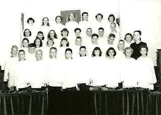
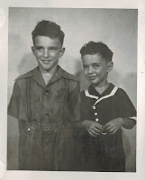

ID Mr. D.
1/6/2012
{kind=link}

Thank you to all who took a guess at which young choir member in this photo from 1950 was Mr. D. 71 one entries were received. You are a very sharp group! 65% of all entries were correct.Yes, I am the one with lots of dark curly hair (those were the days) in the third row, second from the right standing next to the tall boy with blond hair on the end, my cousin and best childhood friend (who, just five year's later would be best man at my wedding!).
Thank you again for participating in my fun "look back" guessing game this Christmas season. Everyone, including those with incorrect guesses, were sent a ventriloquist collector coin my appreciation and my wish for a wonderful New Year!
 |
| Clinton and Jerry |
{kind=link}
Today is Jerry's 70th birthday. Happy Birthday, Bro.! I've put together a fun photo gallery in his honor with comments covering some of the adventures experienced during our childhood. You're welcome to take a peek: http://www.jerrydetweiler.blogspot.com/